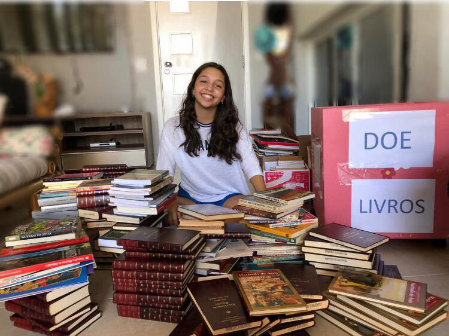
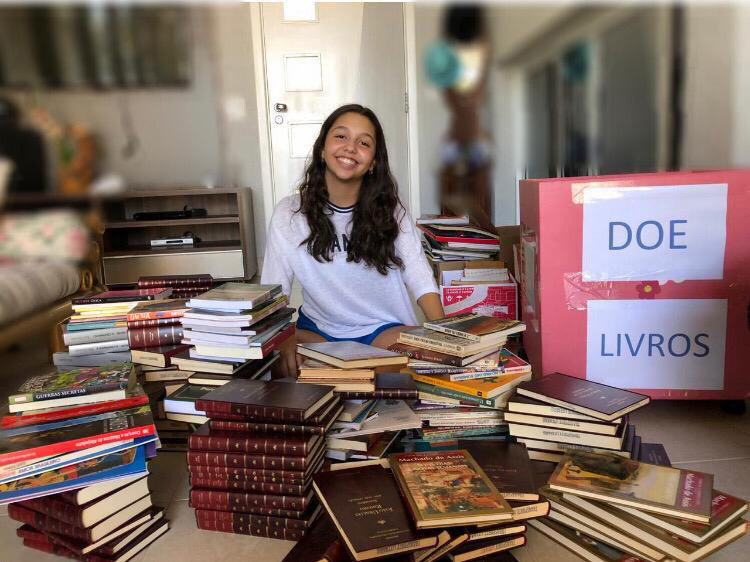

Roda de Leitura Comunitária
Promove encontros semanais em praças e escolas para leitura compartilhada e contação de histórias, focando em crianças de 5 a 10 anos.
- Impacto: 500 crianças atendidas mensalmente.
- Duração: Contínuo.
Descubra as iniciativas que levam a magia da leitura a quem mais precisa.
Promove encontros semanais em praças e escolas para leitura compartilhada e contação de histórias, focando em crianças de 5 a 10 anos.
Um veículo adaptado que funciona como uma biblioteca móvel, alcançando áreas rurais e de difícil acesso.
 

Precisamos de contadores de histórias, organizadores de acervo e apoio logístico. Venha somar com o Livro Aberto!
Preencha o Formulário de Voluntário!Toda doação, seja de livros ou financeira, é investida diretamente na expansão de nossas Rodas de Leitura e na manutenção da Biblioteca Itinerante.